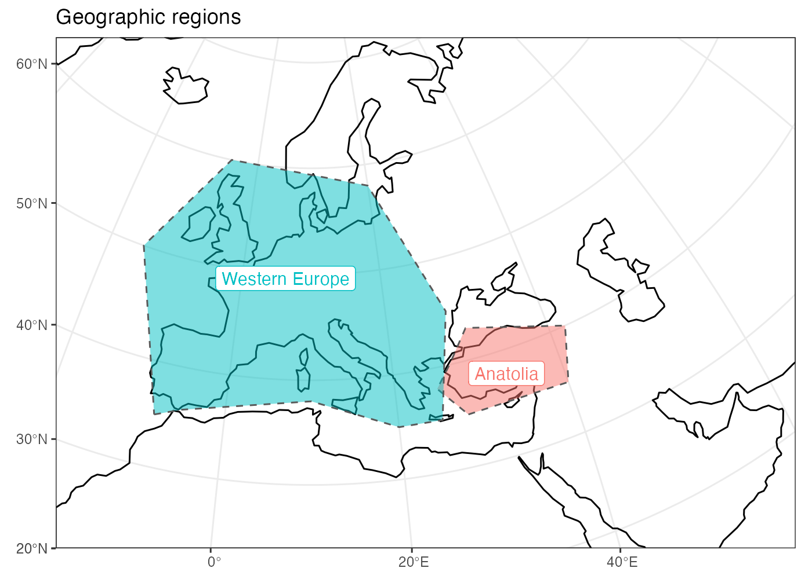
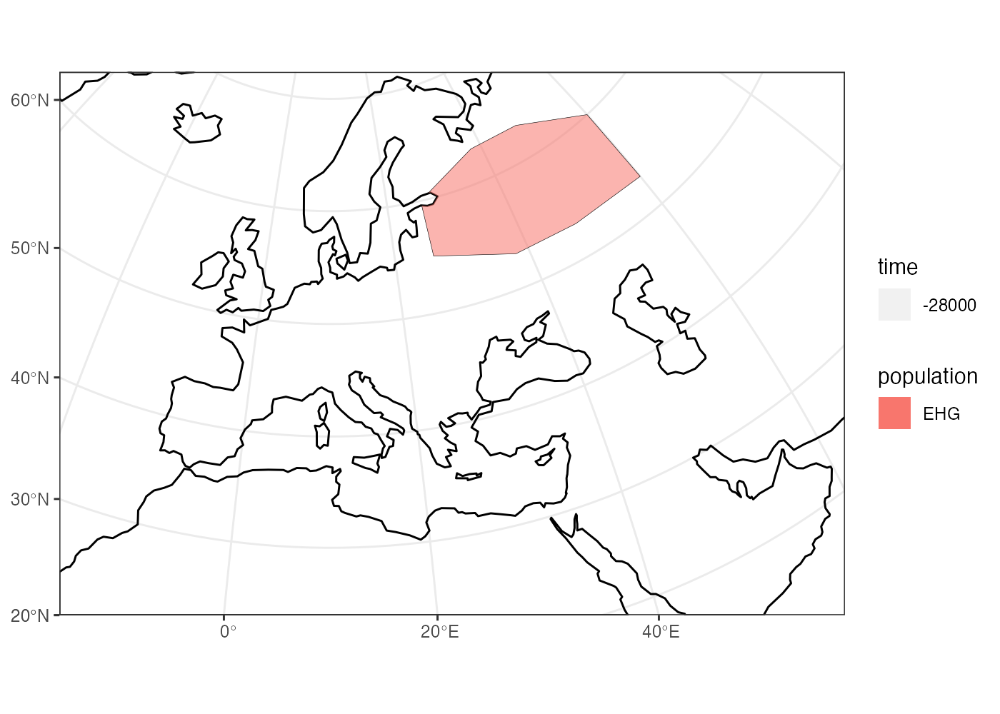
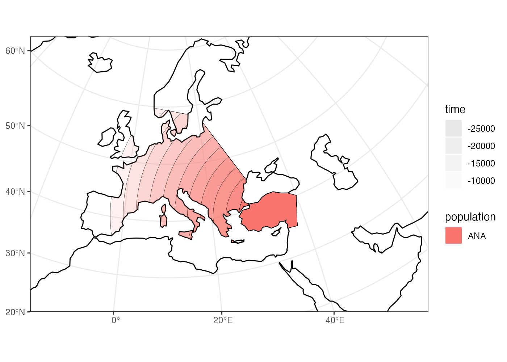
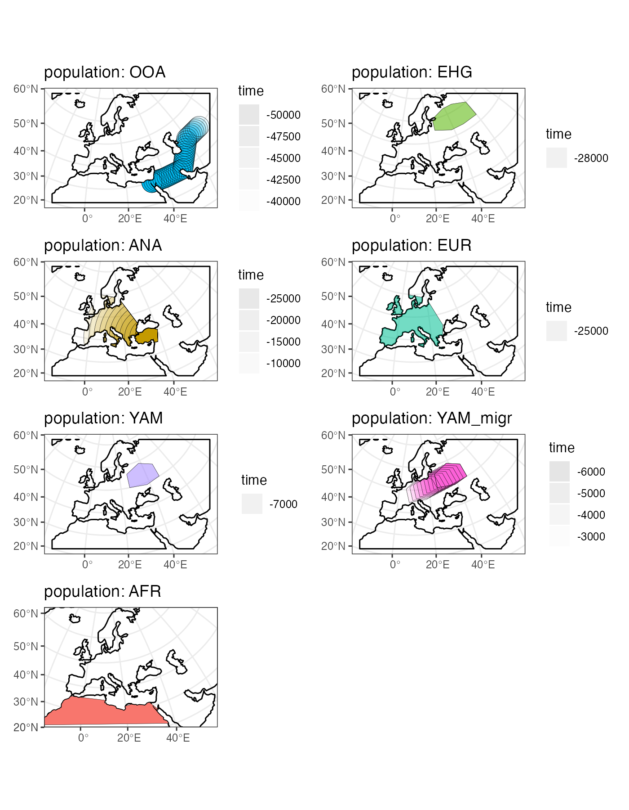

spammr: Introduction and tutorial
tutorial.RmdMotivation
What we want to do is simulate this kind of population history (splits and admixture events):

in the context of this:

to produce this kind of data:
This is possible to do in SLiM using its defineSpatialMap() functionality. However, there is currently no way to define spatial maps programmatically, let alone build spatio-temporal models which include population splits, admixture, migration, and expansion. The package spammr is designed to do exactly this, and feed the generated spatial maps into a dedicated back-end SLiM script.
Philosophy
Geospatial analysis is a deep and complex topic, with dozens of libraries and programs designed to deal with the annoying fact that the Earth is a sphere but we often have to plot things (and simulate things in our case!) on a two-dimensional plane.
Luckily, most of the technical issues with Coordinate Reference Systems, transformations between them and manipulation of geometric objects are pretty much solved now. Unfortunately, dealing with these issues in practice is quite challenging and requires non-trivial amount of domain expertise. Programming even a simple task in this context also requires a lot of code and there are no tools available for programming population genetic simulations which are explicitly spatial in nature.
This R package is designed to provide a collection of primitives (a Domain Specific Language of sorts) for programming population dynamics (splits, movement, admixture, and expansion of spatial boundaries) across space and time without having to explicitly deal with many of the challenges inherent to geospatial analyses.
Another goal is to make these spatio-temporal models fully reproducible, easy to write and debug by inspecting each step of the configuration visually, and finally to allow automated feeding of defined spatial maps into the SLiM population genetics simulation framework.
Installation and setup
First, let’s install the latest version of the package and load it. spammr is not yet on CRAN (but will be soon!), so you will need to install the development version from Github using devtools.
Here are the installation steps:
- Install the
devtoolspackage (unless you already have it, of course):
install.packages("devtools")- Install spammr:
devtools::install_github("bodkan/spammr")- That’s it! You can now load the package with the usual:
library(spammr)Note that the package relies on several R packages for geospatial analyses which, in turn, depend on other software. In case the installation procedure in step #3 fails, inspect the error logs and install the software dependencies manually (on a Mac, use a tool such as homebrew). If that happens, I’d appreciate if you could submit an issue on Github. Thank you!
Finally, because the package is actively being worked on, improvements and bug fixes are being added every couple of hours. Make sure to install the development version each time you’re about to test some things (such as the examples in this vignette).
Defining the overall world map
Before we do anything else, we need to define a section of the map of the world which will provide context for all downstream spatio-temporal manipulation of population ranges.
In principle, any source of geospatial data which can be manipulated using the simple features (sf) infrastructure could be used. For now the spammr package implicitly uses the Natural Earth project data (in it’s vectorizes form!), which it internally loads using the rnaturalearth interface.
The first function we will look at is map(). This function will load the map of the entire world in a vectorized format and zoom in to a specified section of the world.
Note that in the call below, we specify the coordinates of the zoom in a geographical Coordinate Reference System (CRS), i.e. longitude/latitude), but we also specified that we want to perform all the downstream manipulation of the spatial population maps in a projected CRS (Lambert Azimuthal Equal-Area projection). This is more appropriate for representing a wider European continent used in this tutorial. Of course, different CRS projection could be used based on which part of the world we want to simulate.
This is the current approach of spammr: let the user specify everything in an easy to understand longitude/latitude geographical CRS, but the internal data structures and the final exported spatial maps are internally handled in a projected CRS which is better for ensuring undistorted distances and proportions.
world <- map(
xrange = c(-15, 60), # min-max longitude
yrange = c(20, 65), # min-max latitude
crs = "EPSG:3035" # real projected CRS used internally
)
#> OGR data source with driver: ESRI Shapefile
#> Source: "/private/var/folders/hr/_t1b0f5n7c76yrfsg8yk9l100000gn/T/RtmpITNc8n", layer: "ne_110m_land"
#> with 127 features
#> It has 3 fieldsInternally, the world object is a normal sf class object without additional components. This is unlike other spammr object described below, which are also sf objects but which carry additional internal components.
Note that the summary of the object says “projected CRS: ETRS89-extended / LAEA Europe”. This means that the world map has indeed been transformed in the projected CRS we specified above.
world
#> spammr 'world' object
#> ---------------------
#> projected CRS: ETRS89-extended / LAEA EuropePlotting geographical features and population ranges
The spammr package implements its own generic method called plot(), which overrides the default plot() function used for simple features sf objects.
We do this in order to make it easier and more convenient to iteratively build more complex models. The function can smartly decide (based on given input arguments) what is the right way to present the data for the user which helps to define models more quickly without relying on the lower-level mechanisms of the sf package.
More on that below, but here we will just plot the world context we just created:
plot(world, title = "Zoomed-in world map context")Defining smaller geographic regions
In addition to the overall spatial map context, we can also define smaller geographic boundaries. This is mostly useful whenever we want to restrict a population movement (such as spatial population expansion) to a smaller region of the map that has some intuitive geographic meaning (i.e. Anatolia, West Eurasia, etc.).
africa <- region(
"Africa", world,
coords = list(
c(-18, 20), c(40, 20), c(30, 33),
c(20, 32), c(10, 35), c(-8, 35)
)
)
europe_anatolia <- region(
"Western Europe & Anatolia",
world,
coords = list(
c(-10, 35), c(-5, 35), c(10, 38), c(20, 35), c(38, 35),
c(40, 40), c(30, 45), c(20, 58), c(-5, 60), c(-15, 50)
)
)
europe <- region(
"Western Europe",
world,
coords = list(
c(-8, 35), c(-5, 36), c(10, 38), c(20, 35), c(25, 35),
c(28, 45), c(20, 58), c(-5, 60), c(-15, 50)
)
)
anatolia <- region(
"Anatolia",
world,
coords = list(
c(28, 35), c(40, 35),
c(42, 40), c(30, 43), c(27, 40), c(25, 38)
)
)Note that the objects created above are not population boundaries (not yet anyway)! These are nothing else but labels of some generic geographic boundaries which can be used later. They are not attached to any population at this point.
Again, the object returned by the region() function is actually a normal sf object, but carrying some additional annotation such as the name of the region (here “Anatolia”):
anatolia
#> spammr 'region' object
#> ----------------------
#> projected CRS: ETRS89-extended / LAEA EuropeHowever, the object also carries additional class annotations for the purpose of internal spammr machinery:
class(anatolia)
#> [1] "spammr" "spammr_region" "sf" "data.frame"Furthermore, note that in all region() calls we specified the world object defined at the very beginning. This object is added as a hidden attribute to each spammr object and represents the context for all geospatial transformations, expansions, and plotting.
Again, we can use the generic plot() function to plot both geographic regions in the context of the defined section of the world map:
plot(europe, anatolia, title = "Geographic regions")
Note that the world object is no longer explicitly specified. It is not needed, because each other class of objects provided to the plot() function must carry it as a “world” attribute. In fact, each such object must carry the same world context - spammr complains whenever this is not the case.
We can check that the component is really there, although hidden, using the built-in attr function and verify that it is the same as the world object we created at the beginning:
Defining spatial population boundaries
One of the aims of the spammr package is formalizing the specification of spatial population boundaries and their changes over time. The core function for this is population(), which accepts the population name and the time in which we want to enforce that population’s boundary, the effective population size of this population, as well as the world object described above. We also have to specify from which population did our population split from (or explicitly say that it’s an ancestral population). As for specifying the actual spatial boundaries, we have several options.
Polygon population ranges
We can define fine population boundaries using a polygon geometry object (coords = argument) or a region object created by the region() function above. Again, as a reminder, note that all coordinates are described in the context of the geographic CRS.
First, let’s create the African ancestors of modern humans. We restrict the spatial boundary of the African population to the africa region defined above:
afr <- population(
"AFR", parent = "ancestor", Ne = 100,
world = world, region = africa
)
plot(afr)Circular population ranges
In case we want to simulate a more abstract and simpler population boundary, we can specify a center and radius arguments instead of the polygons. All distance units in the spammr package (such as the radius argument here) are currently specified in units of kilometers.
Here we define the location of the population of non-Africans right after their split from the African ancestors:
ooa <- population(
"OOA", parent = afr, time = 51000, Ne = 200,
center = c(33, 30), radius = 500, remove = 27000
)If we call the plot() function on the returned object, we have the option to either plot the population range in its “raw” form or in its “intersected” form, in which case the raw boundary is intersected with the “background” landscape (removing large bodies of water, etc.).
The intersected form is what is ultimately exported in a serialized form (see below) to be loaded as a spatial map into SLiM. This is why the plot() function renders population ranges by default.
plot(ooa, intersect = F, title = "'Raw' population range")
plot(ooa, title = "'Intersected' population range")
Population movement across a landscape
To describe a a directional population movement, we can use the function move(). This accepts the coordinates of the destination points along the way (trajectory), the duration of the migration, and the number of individual spatial maps to save during export (snapshots - more in detail below).
ooa <- ooa %>% move(
trajectory = list(c(40, 30), c(50, 30), c(60, 40), c(70, 40)),
start = 50000,
end = 40000,
snapshots = 30
)We can inspect the object returned by the move() function and see that it now contains not just the first YAM population range at 7000 years ago, but also the ranges of the intermediate locations:
ooa
#> spammr 'population' object
#> --------------------------
#> name: OOA
#> split from: AFR
#> split time: 51000
#> removed at: 27000
#> snapshots:
#> # time Ne map
#> 1 51000.00 200 new
#> 2 50000.00 200 new
#> 3 49696.97 200 new
#> 4 49393.94 200 new
#> 5 49090.91 200 new
#> ...
#> # time Ne map
#> 31 41212.12 200 new
#> 32 40909.09 200 new
#> 33 40606.06 200 new
#> 34 40303.03 200 new
#> 35 40000.00 200 new
#>
#> projected CRS: ETRS89-extended / LAEA EuropeChecking the result visually again, we see:
plot(ooa, title = "Intermediate migration maps")
Let’s create a population of Eastern Hunter Gatherers (EHG), which split from the first non-Africans 28000 years ago:
ehg <- population(
"EHG", time = 28000, Ne = 400, parent = ooa,
world, coords = list(
c(26, 55), c(38, 53), c(48, 53), c(60, 53),
c(60, 60), c(48, 63), c(38, 63), c(26, 60)
),
remove = 6000
)
plot(ehg)
While we’re at it, let’s also create a population of Western Hunter Gatherers (WHG). Because the people living in this region eventually became present day Europeans after receiving admixture from other groups over time (see below), we will call them “EUR” to simplify the modeling code a little bit:
eur <- population(
name = "EUR", time = 25000, Ne = 1000, parent = ehg,
world, region = europe
)
plot(eur)Spatial population expansion
We can simulate the expanding range of a population using the function expand(), which accepts a parameter specifying by how many kilometers should the boundary expand (the by argument), how long should the expansion take (the duration argument) and how many intermediate spatial map snapshots should be exported representing this expansion (the snapshots argument).
For instance, let’s represent the expansion of Anatolian farmers, who also split from the OOA population at 28000 years ago, at the time of the split of the EHG population. Note that we use use an optional parameter region which restricts the expansion only to Europe, instead of all around Anatolia:
ana <- population(
name = "ANA", time = 28000, Ne = 800, parent = ooa,
world, center = c(34, 38), radius = 700,
region = anatolia, remove = 6000
) %>% expand(
by = 2500,
start = 10000,
end = 7000,
snapshots = 10,
region = europe_anatolia
)Note that in principle, you could specify the entire spatio-temporal history of a population in a single pipeline using the pipe operator %>%.
Again, we can inspect the object returned by the expand() function and see that it contains he spatial maps (“snapshots”) of the expansion process across time:
ana
#> spammr 'population' object
#> --------------------------
#> name: ANA
#> split from: OOA
#> split time: 28000
#> removed at: 6000
#> snapshots:
#> # time Ne map
#> 1 28000 800 new
#> 2 10000 800 new
#> 3 9700 800 new
#> 4 9400 800 new
#> 5 9100 800 new
#> 6 8800 800 new
#> 7 8500 800 new
#> 8 8200 800 new
#> 9 7900 800 new
#> 10 7600 800 new
#> 11 7300 800 new
#> 12 7000 800 new
#>
#> projected CRS: ETRS89-extended / LAEA EuropeWe can (and should) check the results visually:
plot(ana, title = "Anatolian expansion into Europe")
To visually see what is really going on behind the scenes, we can plot the raw form of the expansion:
plot(ana, title = "Anatolian expansion into Europe (not intersected)", intersect = F)
We can see that the population of Anatolian farmers at some point invades the spatial boundary of the EUR population. On its own, this doesn’t imply admixture. In the section on admixture below, we will see how spammr implements admixture of overlapping (but also non-overlapping) populations.
Let’s add a couple of more populations and migrations before we move on to implementing admixture between them,
Yamnaya steppe people:
yam <- population(
name = "YAM", time = 7000, Ne = 600, parent = ehg,
world, coords = list(
c(26, 50), c(38, 49), c(48, 50),
c(48, 56), c(38, 59), c(26, 56)
),
remove = 2000
)
plot(yam)Yamnaya invading Europe:
To model the migration of the Yamnaya into Europe, we’re splitting a new “YAM_migr” population from the original Yamnaya. The latter will stay where it is, while the migrating population will start invading the spatial range of Europeans (“Neolithic” population at the time):
Plotting multiple spammr objects
In addition to plotting individual population ranges, the generic function plot() can handle a combination of population ranges, and can also partition them in individual facets. This is very useful for visual inspection of the specified model and for looking for potential issues before the export of individual spatio-temporal maps. Obviously, this is a lot of multi-dimensional information so the plot is definitely not perfect, but it should provide a reasonably compact overview of what we’ve built so far.
plot(afr, ooa, ehg, eur, ana, yam, yam_migr, ncol = 2)
Define admixture events
The way spammr implements admixture events is by calling the admixture() function. This function has a very straightforward interface which you should be able to understand from the examples below.
One thing to note is that the from and to populations must have overlapping spatial ranges in order to simulate admixture. This is probably rather obvious, as populations can’t mix in space-time if they don’t overlap at a given point in space-time.
For example, if you look at the spatial boundaries plotted above, you’ll see that the European and African populations don’t have any overlap in population ranges. If we try to instruct spammr to simulate admixture between them, we will get an error:
admixtures <- admixture(from = eur, to = afr, rate = 0.1, start = 20000, end = 15000)Not a sufficient overlap between population ranges of EUR and AFR
at time 20000. The required overlap is 0.20 but the current overlap is
0.000000.
Please check the spatial maps of both populations by running
`plot(eur, afr, pop_facets = F)` and either adjust the admixture
parameters or add `overlap = F` which will instruct spammr to simulate
admixture without spatial overlap.The error message instructs us to visually verify that this is the case, which can be done by spammr’s plot() function and the optional parameter pop_facets = F (which is set to TRUE by default):
plot(eur, afr, pop_facets = F)Many models will include multiple admixture events, which we can collect in a simple R list:
admixtures <- list(
admixture(from = ana, to = eur, rate = 0.5, start = 8000, end = 6000),
admixture(from = yam_migr, to = eur, rate = 0.75, start = 4000, end = 3000)
)The admixture() function returns nothing else than a data frame collecting all the admixture parameters for the compile() step below:
admixtures
#> [[1]]
#> from_name to_name tstart tend rate overlap
#> 1 ANA EUR 8000 6000 0.5 1
#>
#> [[2]]
#> from_name to_name tstart tend rate overlap
#> 1 YAM_migr EUR 4000 3000 0.75 1Visualize the entire history of splits and admixtures
With the couple of code snippets above, we have defined a simple history of European populations over the last 50 thousand years. This history includes population splits and admixture events as well as other demographic changes. While spammr tries to make the formal specification of spatio-temporal population dynamics as concise as possible, in the hope to increase reproducibility and minimize errors, because the admixture history can be very complex and occurs both across space and time, it is hard to really visualize everything that will happen on the SLiM side after the simulation starts just from the code alone.
For this purpose, the package includes a function graph() which takes in all the information about the relationships between populations (i.e., the population and admixture objects we defined above) and plots it all in the form of a so-called admixture graph (see here for a discussion of the admixture graph concept).
One important thing to note here is that unlike traditional admixture graphs where each node/population is present only once, in the full spammr graph, a single population can participate in many admixture events over the course of history. This is visualized by assigning a color to each population, and different nodes of the same color representing snapshots in time when a demographic event affecting that population happens.
Compile the whole model and load it in SLiM
The most crucial function of spammr is compile(). It takes all population ranges defined across space and time together with list of admixture events (this is optional, of course, as some models won’t include admixture), and then proceeds by converting all vectorized spatial ranges to a raster bitmap form. Furthermore, it compiles all information about split times, \(N_e\) values, admixture directions, times and rates, to a series of tables. All of that will be saved automatically in a dedicated directory in a format that is understood by the backend SLiM script provided by spammr (more on that below).
compile(
populations = list(afr, ooa, ehg, eur, ana, yam, yam_migr),
admixtures = admixtures,
output_dir = "/tmp/test-model",
overwrite = TRUE
)What do the files in the model directory look like? In an ideal case, you as a user should never worry about these things. In fact, the whole purpose of spammr is to let you work on much higher level of abstraction without worrying about these low-level details. That said, you might find it useful to see how things are stored in the background…
First of all, we can inspect the contents of the directory and see that it does, indeed, contain all defined spatial maps (now PNG files, which is what SLiM requires).
list.files("/tmp/test-model", pattern = "*.png")
#> [1] "1.png" "10.png" "11.png" "12.png" "13.png" "14.png" "15.png" "16.png"
#> [9] "17.png" "18.png" "19.png" "2.png" "20.png" "21.png" "22.png" "23.png"
#> [17] "24.png" "25.png" "26.png" "27.png" "28.png" "29.png" "3.png" "30.png"
#> [25] "31.png" "32.png" "33.png" "34.png" "35.png" "36.png" "37.png" "38.png"
#> [33] "39.png" "4.png" "40.png" "41.png" "42.png" "43.png" "44.png" "45.png"
#> [41] "46.png" "47.png" "48.png" "49.png" "5.png" "50.png" "51.png" "52.png"
#> [49] "53.png" "54.png" "55.png" "56.png" "57.png" "58.png" "59.png" "6.png"
#> [57] "60.png" "61.png" "7.png" "8.png" "9.png"It also contains a series of tab-separated configuration tables. These tables contain summaries of the model parameters which we defined graphically above, namely:
- the table of population splits:
read.table("/tmp/test-model/splits.tsv", header = T)
#> pop_id Ne parent_id tsplit tremove
#> 1 0 100 -1 -1 -1
#> 2 1 200 0 51000 27000
#> 3 2 400 1 28000 6000
#> 4 3 800 1 28000 6000
#> 5 4 1000 2 25000 -1
#> 6 5 600 2 7000 2000
#> 7 6 1000 5 6000 2900- the table of admixture events:
read.table("/tmp/test-model/admixtures.tsv", header = T)
#> from to tstart tend rate overlap
#> 1 3 4 8000 6000 50 1
#> 2 6 4 4000 3000 75 1- and finally, the table of populations whose spatial maps will be updated throughout the simulation, as well as the times of those updates (this table is rather long, so we’re taking a peek at only the first couple of lines):
head(read.table("/tmp/test-model/maps.tsv", header = T))
#> pop_id time map_number
#> 1 0 -1 1
#> 2 1 51000 2
#> 3 1 50000 3
#> 4 1 49697 4
#> 5 1 49394 5
#> 6 1 49091 6Running the simulation
The way we feed the entire serialized model into SLiM is through the run() function, which understands the format of the model directory created by the compile() function and generates a SLiM script (using a backend skeleton script which is a part of this package and can be found by calling system.file("inst/extdata/backend.slim", package = "spammr"), in case you’d like to peek into its internals).
Note that when you run this model in SLiMgui (which should automatically open by calling the command below), you will see populations pop up in individual panels. This is how SLiMgui tracks spatial ranges of different populations. Everyone is still simulated in the same world, it’s just that the simulation visualizes individual population ranges separately to reduce clutter.
A couple of more things to note: notice that the function accepts several parameters determining the length of the simulated sequence and the recombination rate, as well as the length of the burnin period, the total time of the simulation run (excluding burnin), and generation time (which is used to convert all times defined during model specification above into SLiM’s inetrnal units of generations).
Finally, the parameter track_ancestry determines whether we want our SLiM script to track ancestry proportion changes in all simulations using neutral markers uniformly distributed along each genome. The default value of this parameter is FALSE and no ancestry tracking is performed. Any other non-zero, posititive integer value specifies how many markers we want to use for tracking. Please note that this significantly increases the simulation overhead, not only because the actual burden of mutation objects being simulated, but also because the ancestry is calculated in each generation for each simulated genome. In this case, we’re tracking ancestry using a single non-recombining marker to minimize computational time for the purposes of this demo.
Ancestry tracking is very useful to monitor that the spatial admixture model as defined in R really behaves as expected even on the SLiM side. This can be verified by inspecting files named as output_ancestry_XXX.tsv in the specified output directory. See the manpage of run() for more details.
run(
model_dir = "/tmp/test-model",
gen_time = 30, burnin = 10, sim_length = 70000,
seq_length = 100, recomb_rate = 0,
interaction = 30, spread = 20, track_ancestry = 1
)Post-simulation diagnostics
In case we instructed spammr to track ancestry proportions, we can visualize them after the simulation is over using the built-in diagnostics() function. This is quite bare-bones for now and the way diagnostics are generated is subject to change…
ancestries("/tmp/test-model")Similarly, we can re-capitulate the spatial dynamics with the spammr function animate() (this functions is also very bare-bones at the moment and is mostly useful as a proof of concept rather than anything else):
animate("/tmp/test-model/output_locations.tsv.gz", gen_time = 30, nframes = 200)
In case an argument gif = ... was provided, the function will save the animation to the specified location as a GIF file. Note that unless your simulation is very short and/or involves only a small population, rendering of the animation can take several minutes.